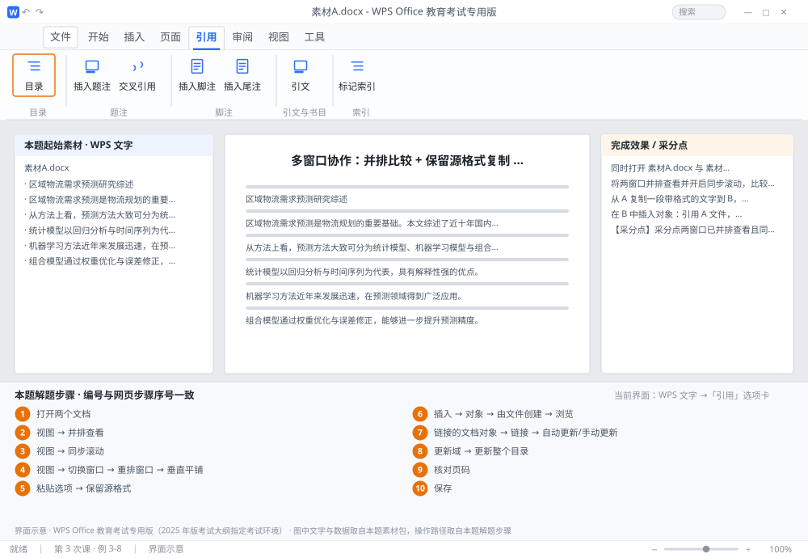

完成比对文档 · 例 3-8
多窗口协作：并排比较 + 保留源格式复制 + 插入链接对象 ｜ 第 3 次课 / WPS 文字 ｜ 网页：实操-文字3.html ｜ 考试环境：WPS Office 教育考试专用版（2025 年版考试大纲指定考试环境）
用途 本页按修订后的题目要求与解题步骤生成，是交卷自查的结果基准：
逐项列出每一步应出现的可复核结果，配合模拟操作截图与解题结果文件使用。
它不是素材包的一部分，不会预置答案动作；起始素材仍从本题素材包下载。
一、本题起始素材包
目录：练习素材/练习3-8-多窗口协作/ ｜
下载包：练习素材/下载/练习3-8-多窗口协作.zip
二、题目要求
- 同时打开 素材A.docx 与 素材B.docx。
- 将两窗口并排查看并开启同步滚动，比较两版差异。
- 从 A 复制一段带格式的文字到 B，粘贴时选「保留源格式」。
- 在 B 中插入对象：引用 A 文件，勾选「链接到文件」。
- 在 B 中更新目录并检查页码是否正确。
- 保存 B 为 学号-姓名-练习3-8.docx。
三、解题步骤（编号与下方核对表、截图编号一致）
- 打开两个文档。先把两个文件都打开（同一窗口的不同标签/窗口均可）。
- 并排查看。切到任一文档 →「视图」→「并排查看」→ 两个窗口自动左右平铺。
- 同步滚动。「视图」→ 确认「同步滚动」处于按下状态；滚动一个窗口时另一个会跟着动，方便逐段对照。
- 切换窗口。「视图」→「切换窗口」→ 在列表里选择目标文档（也可用「重排窗口」选「垂直平铺」）。
- 复制带格式文字。在 A 中选中段落 → Ctrl+C → 切到 B → 定位 → Ctrl+V 后点右下角出现的「粘贴选项」→ 选「保留源格式」（图标为一个带格式刷的粘贴按钮）。
- 插入链接对象。在 B 中 →「插入」→「对象」→「由文件创建」→「浏览」选 A 文件 → 勾选「链接到文件」 → 确定。
- 验证链接。右键该对象 →「链接的文档对象」→「链接」→ 可看到链接路径与「自动更新/手动更新」选项。
- 更新目录。在 B 中右键目录 →「更新域」→「更新整个目录」。
- 核对页码。翻到目录中标注的页码，确认与实际页一致；若不一致，说明前面有分节或分页变动。
- 保存。保存 B 为 学号-姓名-练习3-8.docx。
四、完成效果 / 采分点
采分点两窗口已并排查看且同步滚动开启 · 粘贴时使用「保留源格式」 · 已插入带「链接到文件」的对象 · 目录已更新且页码与正文一致 · 文件保存正确
五、逐项完成核对表
| 步骤 | 关键操作路径 | 应出现的结果（可复核） |
|---|
| 1 | 打开两个文档 | 打开两个文档 |
| 2 | 并排查看 | 「视图」、「并排查看」 |
| 3 | 同步滚动 | 「视图」、「同步滚动」 |
| 4 | 切换窗口 | 「视图」、「切换窗口」、「重排窗口」、「垂直平铺」 |
| 5 | 复制带格式文字 | 「粘贴选项」、「保留源格式」 |
| 6 | 插入链接对象 | 「插入」、「对象」、「由文件创建」、「浏览」、「链接到文件」 |
| 7 | 验证链接 | 「链接的文档对象」、「链接」、「自动更新/手动更新」 |
| 8 | 更新目录 | 「更新域」、「更新整个目录」 |
| 9 | 核对页码 | 核对页码 |
| 10 | 保存 | 学号-姓名-练习3-8.docx |
六、模拟操作截图

界面示意 · WPS Office 教育考试专用版 · 橙色编号与本题解题步骤序号一致；
图中文字与数据取自本题素材包，功能入口取自本题解题步骤。
核对方法：按网页解题步骤完成并另存自己的成稿后，逐行比对本表第 3 列的
参数、公式、区域、文件名与对象数量；再对照网页「完成效果 / 采分点」检查版式是否一致。